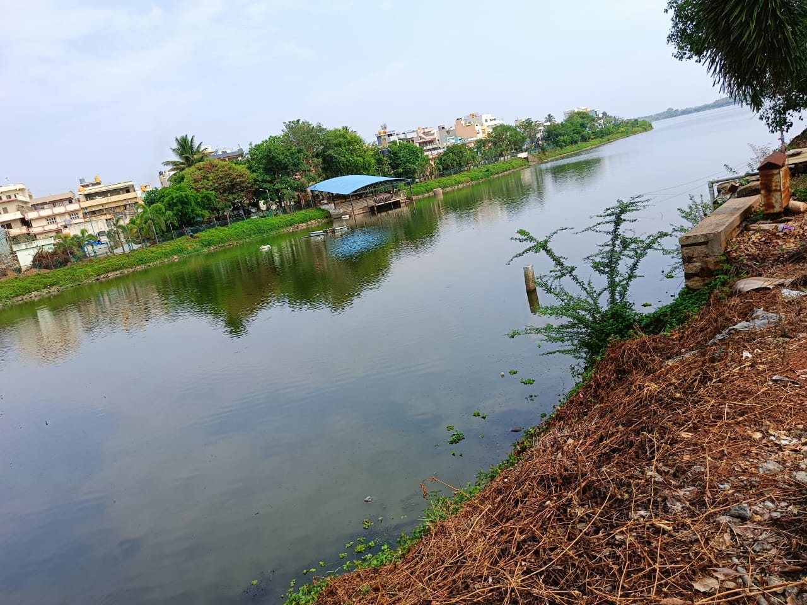

One of Karnataka's oldest temples, dating back to the 19th century.
Srinivasa Sagara
It's a natural wonder created by the Penna River, sometimes called the Grand Canyon of India.
Kaiwara
It was known as Ekachakrapura and is believed to be the place where the Pandavas lived.
Devanahalli Fort
Famed for being Tippu Sultan's birthplace.
Gopinath Swamy Temple
Built during the rule of the Nolamba Dynasty in the 9th century & later expanded by Chola & Hoysala kings.

Yelhanka Lake
One of the largest lakes in Bengaluru North Zone.
1.Nandi Temple:
Visiting the Nandi Temple in Nandi Village is a journey through time, offering a glimpse into the grandeur of ancient Indian architecture and spirituality. Its serene environment, coupled with its historical and cultural richness, makes it a must-visit destination for tourists, history buffs, and devotees alike.
The temple is easily accessible from Bangalore, being just about 60 kilometers away. It makes for a convenient short trip or weekend getaway from the city.
2.Srinivasa sagara:
Srinivasa Sagara in Chikkaballapur is a destination that combines natural beauty, historical significance, and recreational opportunities. Whether you’re a nature lover, history enthusiast, or just looking for a peaceful retreat, Srinivasa Sagara has something to offer. Its scenic landscapes, bird watching prospects, and cultural events make it a must-visit location for tourists exploring the region.
Located close to the town of Chikkaballapur, Srinivasa Sagara is easily accessible by road. It’s a convenient spot for a short trip or a weekend getaway from Bangalore, which is about 60 kilometers away.
3.Kaiwara:
Kaiwara Temple in Chintamani, Chikkaballapur, is a destination that combines spiritual significance, historical importance, and natural beauty. Whether you are a devotee, a history enthusiast, or a nature lover, the temple offers a fulfilling and enriching experience. Its serene surroundings, cultural festivals, and spiritual ambiance make it a must-visit location for tourists exploring the region.
Kaiwara Temple is easily accessible from Bangalore, being approximately 65 kilometers away. It makes for a convenient day trip or weekend retreat for those living in or visiting Bangalore.
The temple is well-connected by road, and the nearby town of Chintamani has good public transport facilities, making it easy for visitors to reach the temple.
4.Devanahalli Fort:
Devanahalli Fort in Chikkaballapur is a destination that offers a blend of historical significance, architectural splendor, and natural beauty. Its proximity to Bangalore, coupled with its rich cultural heritage and serene environment, makes it a must-visit location for tourists. Whether you're a history enthusiast, architecture lover, or just seeking a peaceful retreat, Devanahalli Fort provides a fulfilling and enriching experience.
Devanahalli Fort is conveniently located about 35 kilometers from Bangalore, making it an easy destination for a day trip or weekend getaway.
5.GopinathSwami Temple:
The Gopinathswami Temple near Nandi in Chikkaballapur is a destination that combines spiritual significance, historical richness, and natural beauty. Its serene environment, coupled with its cultural vibrancy and proximity to Nandi Hills, makes it a must-visit location for tourists. Whether you're a devotee, history enthusiast, or nature lover, the Gopinathswami Temple provides a fulfilling and enriching experience.
The Gopinathswami Temple is easily accessible from Bangalore, being approximately 60 kilometers away. Its proximity to Nandi Hills makes it an excellent addition to a day trip or weekend getaway.
The temple is well-connected by road, and visitors can easily reach it via private vehicles or public transportation from nearby towns and cities.
6.Yelahanka Lake:
Yelahanka Lake in Bengaluru is a destination that offers a blend of natural beauty, recreational activities, and ecological significance. As the largest lake in North Bengaluru, it serves as a vital green space and a hub for community engagement. Its serene environment, combined with the rich biodiversity and conservation efforts, makes it a must-visit location for tourists, nature lovers, and residents alike. Whether you are seeking a peaceful retreat, a place for outdoor activities, or an educational experience, Yelahanka Lake provides a fulfilling and enriching visit.
Yelahanka Lake is conveniently located in the northern part of Bengaluru, making it easily accessible for residents and visitors. It is well-connected by road and public transport, enhancing its appeal as a local attraction.
As one of the largest lakes in North Bengaluru, it provides an essential green space within the urban environment, offering a natural respite for city dwellers.